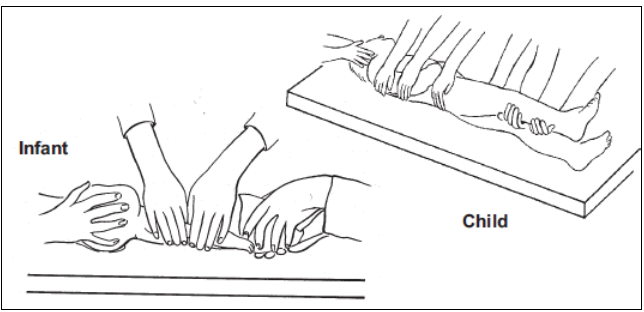

C-Spine immobilisation
|
Tension pneumothorax
Haemothorax
Rib fractures/ flail chest
Open thoracic injury (e.g. "sucking chest wound")
Consider the possibility of cardiac tamponade
Consider other mediastinal injuries, disruption of great vessels, diaphragmatic rupture etc.
Indication for intubation and ventilation:
Resources for mechanical ventilation are limited Note on the usage of drugs: we use ketamine as an induction agent. In traumatic brain injury the theoretical risk of increasing intracranial pressure is outweighed by the relative haemodynamic stability compared with the use of other induction agents. |
| >5 years | <5 years |
|---|---|
| Motor | |
| Obeys commands (6) | Normal spontaneous movements (6) |
| Localises pain (5) | Withdraws to touch (5) |
| Withdraws to pain (4) | Withdraws to pain (4) |
| Flexion to pain (decorticate) (3) | Abnormal flexion (decorticate) (3) |
| Extension to pain (decerebrate) (2) | Abnormal extension (decerebrate) (2) |
| No response (1) | No response (1) |
| Verbal | |
| Orientated (in person or place or address) (5) | Alert, babbles, words or sentences to usual ability (normal) (5) |
| Confused (4) | Less than usual ability, irritable cry (4) |
| Inappropriate words (3) | Cries to pain (3) |
| Incomprehensible sounds (2) | Moans to pain (2) |
| No response to pain (1) | No response to pain (1) |
| Eyes | |
| Spontaneous (4) | Spontaneous (4) |
| To voice (3) | To voice (3) |
| To pain (2) | To pain (2) |
| None (1) | None (1) |
Log Roll |
No Neck Trauma: Recovery Position
Turn the child on to their side to reduce the risk of aspiration
Keep the neck slightly extended and stabilise by placing the cheek on one hand
Bend one leg to stabilise the body position
{kind=link}
{kind=link}
{kind=link}